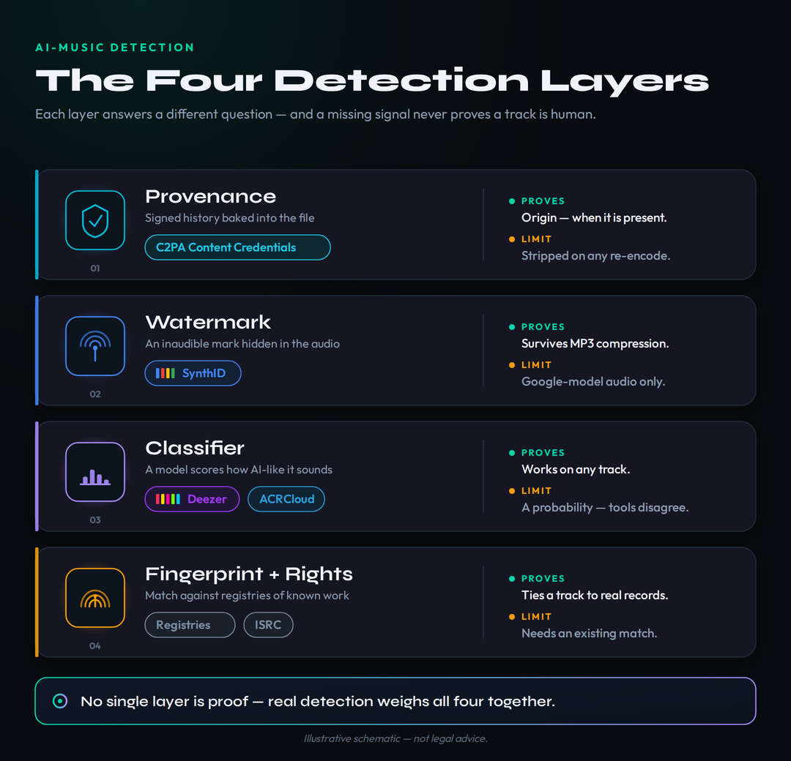
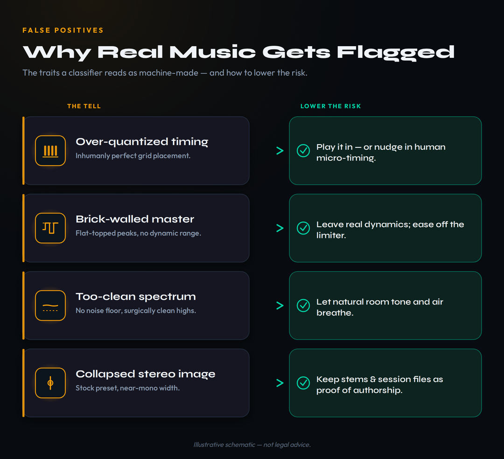
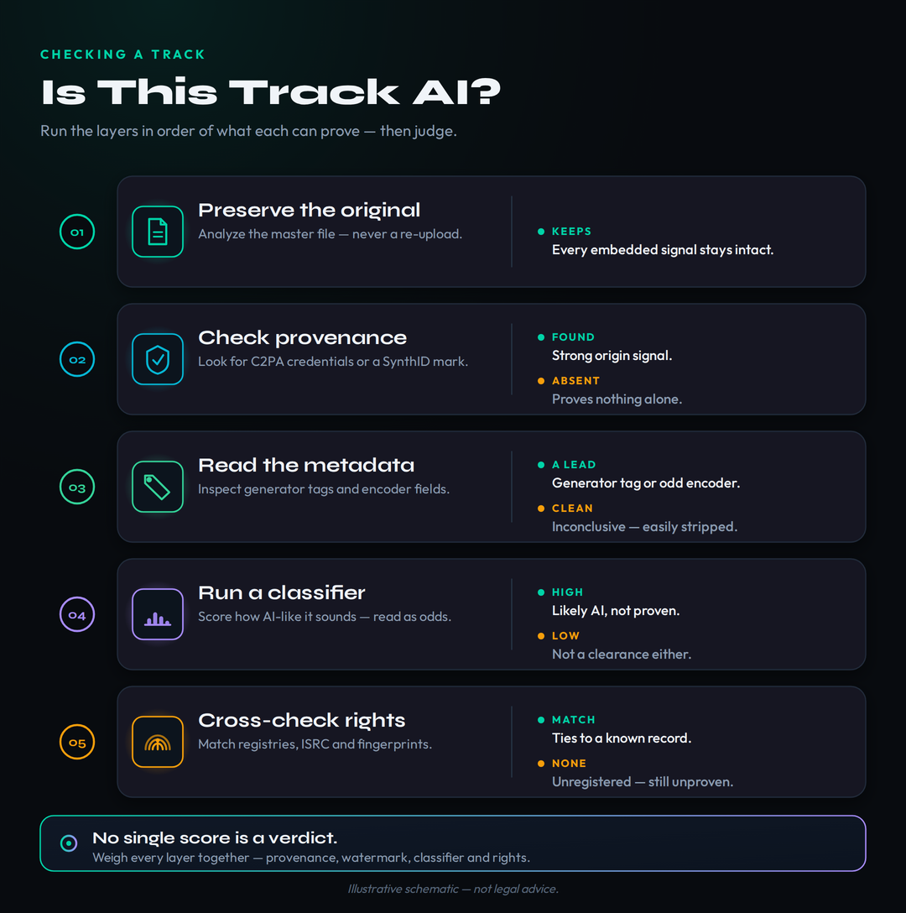

Every week, more producers ask the same two-sided question. One half is from people who want to know whether a track they are hearing — or about to license, playlist, or sign — was made by AI. The other half is from human musicians who are genuinely frightened that their own song will be flagged as AI and pulled from a platform they have spent years building on. Both groups want the same thing: a button that takes a song and returns a clean yes or no. That button does not exist, and the honest reason it does not exist is the most useful thing this article can teach you. AI music detection in 2026 is not one test. It is a stack of imperfect signals — provenance, watermarks, classifiers and fingerprints — that each answer a slightly different question, disagree with each other, and together produce odds rather than proof.
This article links to MPW tools and to third-party platforms, some of which are affiliate links. If you sign up through one we may earn a commission at no cost to you. It changes nothing about the analysis — the detectors, accuracy figures and policies below are reported as they are, click or not.
There is no single public “is-it-AI” button. Detection works in four layers: provenance (C2PA Content Credentials), watermarks (Google’s SynthID, which only covers Google’s own models), classifiers (Deezer’s platform detector and tools like ACRCloud), and fingerprinting plus rights records. Each proves something different, and a missing signal never proves a track is human. Vendors advertise 99%-plus accuracy on their own test sets, a transparent academic-style detector publishes 87.67%, and a blind study found 97% of listeners could not tell AI from human at all. The takeaway for anyone releasing music: you cannot “beat” detection and should not try — the durable move is to make your release provably yours.
One honesty note before the detail. This is a fast-moving corner of the industry — the headline facts below were re-verified on June 26, 2026, and the dated snapshot section is built to be refreshed because parts of it will be stale within weeks. We treat every vendor accuracy figure as a claim, not a measured fact, we separate what a tool can prove from what it cannot, and we keep the whole piece on the right side of one line: this explains how detection and provenance work so you can stay compliant and protect honest work. It is not a guide to defeating detection, and the “can it be fooled?” question is answered factually, without method.
Why There Is No Single “Is It AI?” Button
The instinct to want a single verdict is reasonable, because that is how plagiarism checkers and reverse-image search feel to use: paste something in, get an answer. Music does not work that way, and the reason is worth understanding before you trust any tool. A plagiarism checker compares your text against a known corpus of existing text; a match is a match. An AI-music detector is not comparing your song against a library of known AI songs. It is making a statistical guess about whether the internal characteristics of the audio — how notes are placed in time, how the spectrum is shaped, how clean the noise floor is — look more like the output of a generative model than like a human performance. That is a probability estimate, and probability estimates are wrong some of the time by definition.
The scale of what these systems are trying to filter explains why the industry built them anyway. Deezer reported in 2026 that it receives roughly 75,000 fully AI-generated tracks every single day, accounting for around 44% of all new uploads to its catalog — up from about 10,000 a day in early 2025. That is more than two million machine-made tracks a month arriving at one platform alone. No human review process can touch that volume, so detection had to be automated, and automation at that scale means accepting a trade-off between catching AI tracks and wrongly flagging human ones. Every threshold a platform picks moves that trade-off in one direction or the other; there is no setting that catches all the AI without ever touching a real musician.
The reason platforms tolerate that false-positive risk at all is money. The flood of AI uploads is not mostly people sharing music they love; the dominant motive is fraud. Deezer says up to 85% of the streams on the AI tracks it identifies are fraudulent — bot-driven plays designed to siphon royalties out of a pool that is split among everyone — which is why it demonetizes them rather than paying out. That reframes detection from a taste question into an accounting one: every undetected fraudulent stream is money taken from human artists, so platforms have a direct financial incentive to over-detect rather than under-detect. For an honest producer that incentive is a double edge. It means the systems are aggressive, and aggressive systems are exactly the ones that occasionally catch a real human in the net. Understanding that the machine is hunting stream-farms, not punishing creativity, is the first step to not taking a flag personally — and to documenting your work well enough that a flag is easy to reverse.
There is a second, quieter reason the single-button dream fails: the tools are getting harder to tell apart from people, not easier. Deezer, working with Ipsos, ran a blind listening test across eight countries and roughly 9,000 respondents and found that about 97% could not reliably distinguish fully AI-generated songs from human-made ones by ear. If trained ears at that scale cannot do it, no consumer is going to do it by “listening for the AI,” and any tool that claims to is selling confidence it cannot back up. The honest framing — the one the better field guides have converged on — is that detection is not a single-score problem. It is a layered case you build, where a missing watermark is not proof of humanity and a high classifier score is not proof of guilt. To see where this fits the larger picture of how AI music is treated legally and commercially, our hub on whether AI music is legal is the evergreen companion to this piece.
The Four Layers of AI-Music Detection
It is easier to reason about detection if you stop thinking of it as one tool and start thinking of it as four separate layers, each answering a different question and each with a different blind spot. The first layer is provenance: signed records that travel with the file and state where it came from. The second is watermarking: an inaudible pattern baked into the audio itself at the moment of generation. The third is classification: a model that listens to the finished audio and estimates the odds it was machine-made. The fourth is fingerprinting and rights records: matching the track against databases of known recordings and registered works. A serious answer to “is this AI?” consults more than one layer, because each one is strong exactly where another is weak.

The fourth layer, fingerprinting and rights records, is the one producers think about least and rely on more than they realize. Audio fingerprinting — the same family of technology behind content-ID matching — reduces a recording to a compact signature and compares it against a database. In a detection context that database can hold the signatures of known generator outputs, which is part of how platform-scale classifiers recognize prolific models; in a rights context it is the registries of released recordings and registered compositions, keyed by identifiers like ISRCs. This layer cannot tell you a brand-new track is AI by itself, because a never-before-seen file has nothing to match. What it can do is place a track in the web of existing rights: whether it duplicates a known recording, whether it is registered, and to whom royalties should flow. That is why provenance and rights records, not classifier scores, are what the clearance side of the industry actually leans on.
What makes the stack confusing in practice is that the layers fail in opposite directions. Provenance and watermarks can give you a strong positive — if a valid credential or watermark is present, you have real evidence of origin — but they are silent when absent, because a credential can be stripped by a simple re-encode and most generators never embed a watermark in the first place. Classifiers are the reverse: they always return something, a number for any file you hand them, but that number is a guess that can be confidently wrong. Fingerprinting only helps when there is a matching record to find. No single layer is both always-available and always-right, which is precisely why the people who do this well never let one layer cast the deciding vote. The sections that follow take the two layers producers most misunderstand — provenance and classifiers — and show exactly what each can and cannot tell you.
Provenance: C2PA Content Credentials and SynthID
Provenance is the strongest signal when it exists, and 2026 was the year it stopped being a niche idea. The two technologies you need to know are C2PA Content Credentials and Google’s SynthID, and they work in fundamentally different ways. C2PA Content Credentials are structured, cryptographically signed metadata attached to a file: a manifest that records who created it, which tool produced it, when, and what edits were applied. Because the manifest is signed, tampering breaks the signature, so a valid credential is hard to forge. The catch is that the credential lives in the file’s metadata layer, which means it can be removed — deliberately or accidentally — the moment the file is re-encoded, converted, or run through a tool that does not preserve it. A present, valid C2PA manifest is excellent evidence; its absence tells you almost nothing.
SynthID solves the durability problem and inherits a different limitation. Instead of attaching metadata, Google DeepMind’s SynthID alters the audio samples themselves in a pattern that is inaudible to listeners but readable by a trained detector, distributed across frequency bands and time so that it survives compression and transcoding — enough of the pattern reportedly persists even after MP3 encoding at 128kbps. The trade-off is information poverty and coverage. SynthID can tell you that a file came from a SynthID-enabled generator, but not who made it, when, or what was edited. And critically, it is Google-only: it marks audio from Google models such as Lyria, but it is not a universal decoder for a Suno, Udio, ElevenLabs or Stable Audio file. If you run a typical Suno export through Google’s SynthID portal, it will read “not detected,” and that result is meaningless for that file — not evidence of anything.
The most important development of the year is that these two approaches stopped competing and started stacking. On May 19, 2026, OpenAI joined the C2PA standards steering committee and committed to embedding SynthID watermarks alongside the C2PA credentials it already attaches; the same day, Google announced that C2PA verification and SynthID detection were coming natively to Google Search and Chrome. The shared conclusion from two of the largest AI labs, published on the same day, was blunt: neither layer is sufficient alone. Metadata carries rich context but strips on re-encode; a watermark survives transformation but says little. Paired, they are far more resilient than either is by itself. For a producer, the practical reading is simple: provenance is becoming the system the platforms trust most, so the smart play is to preserve it on your own releases rather than to wonder how to remove it. The mechanics of how this metadata travels are covered in our explainer on music metadata.
Classifiers: How Detectors Actually Score a Track
When people say “AI music detector,” they almost always mean a classifier — the layer that takes finished audio with no metadata and no watermark and still returns a probability. This is the workhorse behind Deezer’s platform tagging and behind the consumer tools you can paste a link into, and understanding roughly how it works tells you a lot about when to trust it. A modern classifier converts the audio into a dense numerical representation — embeddings from a model trained on a great deal of music — that capture patterns in spectral texture, rhythm and timbre that are hard to describe in words. A second, simpler model then maps those embeddings to a single human-versus-AI score. The classifier is not recognizing a specific song; it is recognizing the statistical fingerprint that a generation process tends to leave.
Three of those statistical tells come up again and again, and they are worth knowing because they are also the source of most false positives. The first is timing. Generative models tend to place events on a machine-precise grid, while human performers introduce tiny, constant micro-timing variations — the fractional looseness that makes a groove feel human. A track whose timing is suspiciously perfect reads as more likely machine-made. The second is spectral shape: some generators leave characteristic patterns in the high frequencies or in how energy is distributed across the spectrum. The third is the noise floor and stereo image — output that is unusually clean, or unusually close to mono, can look synthetic. None of these is a smoking gun. They are tendencies, and the moment you understand that a hyper-quantized, brickwalled, spotless mix is exactly what trips the classifier, you can see why a perfectly human electronic track sometimes gets caught in the net.
How Accurate Are AI Music Detectors, Really?
This is the question every vendor answers with a big number and almost nobody answers with a methodology, so it pays to look at the spread rather than any single figure. At the confident end, platform-scale and commercial tools advertise accuracy in the high nineties: Deezer’s free public detector, launched in June 2026, claims 99.8% accuracy, and the ACRCloud fingerprinting layer that underpins many intake scanners is cited around 99%. Those are real systems doing real work, but the numbers are vendor-reported, measured on the vendor’s own test data, with no published benchmark, audit or shared methodology behind them. A 99.8% figure on a curated internal set is not a promise about your specific track, and treating it as one is the single most common mistake people make when reading a detector result.
At the transparent end, the picture is more sober and more believable. One musician-facing detector publishes its model name, its roughly 1,900-song training set, and — unusually — its actual holdout accuracy: about 87.67% for its current model, up from 84.35% for the previous one, released in May 2026. That is not 99%, and the honesty is the point. It also lines up with the broader academic literature, which frames AI-music detection as an ongoing arms race in which detectors trained on yesterday’s generators lose ground as new models appear, and in which audio watermarks have repeatedly been shown to be removable under determined attack. Put the three reference points together — vendor claims near 99%, a transparent benchmark near 88%, and a blind human test where 97% could not tell at all — and the realistic read is that good detectors are genuinely useful as a probability, unreliable as a verdict, and dangerous when a single confident percentage is allowed to end a high-stakes decision on its own.
The academic literature explains why even an honest 88% should not be read as a permanent grade. Researchers describe AI-music detection as an arms race: a detector is trained on the outputs of the generators that exist today, and every new or updated model shifts the target, so accuracy measured this quarter can quietly erode next quarter as the things being detected change. The same literature has repeatedly shown that audio watermarks, the supposedly durable layer, can be weakened or removed under determined attack — which is one more reason no serious process treats a watermark check as conclusive on its own. The practical lesson is not despair; it is humility. These tools are improving and genuinely useful, but they are snapshots of a moving target, and a number that looks authoritative is still just the best current estimate from one model on one test set.
Two practical consequences follow. First, detectors disagree with each other on the same file, because they are trained on different data with different thresholds; a track can score 71% on one tool and 94% on another, or pass one checker and fail the next. Second, a result has a shelf life. A classifier that flagged nothing three months ago may flag your track today because the model was retrained, and the reverse is also true. If you are checking a track that matters, check it on more than one tool, re-check before release rather than once, and read the output as “these are the odds this tool assigns” rather than “this is what the track is.” If you want a sense of how protectable a given track is in copyright terms once you have a read on its origin, the AI Copyright Strength tool estimates that separately.
Where Detection Stands — June 2026 — refreshable snapshot
Because this layer moves monthly, here is a dated snapshot of the state of play, current as of June 26, 2026. Treat the figures as the platforms’ own claims and re-check them before relying on any one of them.
Volume: Deezer reports roughly 75,000 fully AI-generated tracks uploaded per day, about 44% of new uploads, and says up to 85% of streams on AI tracks were flagged as fraudulent and demonetized. Public tooling: on June 11, 2026 Deezer launched a free, cross-platform AI detector covering 20 streaming services in 27 languages, claiming 99.8% accuracy, and has been licensing its detection technology to rights bodies since January 2026. Provenance: the May 19, 2026 alignment of C2PA and SynthID, with native verification coming to Google Search and Chrome, is pushing the industry toward provenance-first checking. Disclosure: AI disclosure has moved into the upload flow — Spotify’s AI credits beta began April 16, 2026 using DDEX-based metadata (informational, not a ranking penalty), Apple Music began phasing in transparency tags, and Spotify has carried out large retroactive removals of spam-pattern AI uploads. The constant: every public figure here is a vendor or platform claim, and a missing signal still never proves a track is human.
Why Real Music Gets False-Flagged — and How to Lower the Risk
This is the section human producers actually came for, and it deserves a clear answer: yes, genuinely human tracks do get flagged as AI, and it happens for understandable reasons rather than random malice. Remember what the classifier is looking for — machine-precise timing, an unusually clean spectrum, a too-perfect noise floor. Modern electronic production naturally produces some of those same characteristics. A track built entirely on quantized programming, mastered loud and limited flat, with pristine digital synths and almost no stereo width, shares a statistical profile with generated audio even though a human made every decision. The detector is not “wrong” in a malfunctioning sense; it is doing exactly what it does, and your track happens to sit near the boundary it was trained to draw.

The good news is that the same understanding tells you how to reduce the risk without changing your art. Where it suits the music, a little human micro-timing — a real performance, a touch of swing, played rather than perfectly gridded parts — pulls a track away from the machine-precise tell. Preserving some genuine dynamics rather than crushing everything to a flat ceiling helps, as does a real stereo image. But the most reliable protection is not sonic at all; it is documentary. Keep your stems, your session file, your dated project history and your draft bounces, because the strongest possible answer to “prove this is human” is a complete human paper trail that no generated track can produce. If your work combines AI-generated elements with substantial human production, that documentation is what lets you explain the track honestly rather than hope a classifier rules in your favor. Our guides on how to release AI music and how to distribute music both lean on the same habit.
What Platforms and Distributors Actually Do
For most producers the detection layer they will actually meet is not a tool they choose to run but the gate their distributor and streaming platform run automatically. In 2026 that gate has a consistent shape: AI music is broadly allowed, but it must be disclosed, and concealment is what triggers consequences. DistroKid accepts AI-generated tracks if you hold the rights and tick its AI-disclosure box at upload; it also runs an automated scan before delivery, and a track that the scan flags as AI without the box checked is held for manual review rather than waved through. It does not cap how many AI tracks you upload, but it does draw a hard line at unauthorized voice clones of named artists. TuneCore sits in the middle — it allows AI-assisted work but will not distribute tracks that are 100% AI with no human creative input, and a flagged upload is paused for resubmission rather than permanently rejected. CD Baby is the strictest of the majors, declining tracks where a human is not the primary creative force.
The bigger shift is that disclosure has moved into the upload flow itself and now travels as structured metadata. Spotify began an AI-credits beta on April 16, 2026, starting with DistroKid, that surfaces an informational tag in a track’s credits when AI involvement is declared through the distributor. That tag rides on DDEX metadata, it is opt-in at the distributor level rather than imposed by the platform, and Spotify has been explicit that it is meant to inform listeners, not to demote or filter — there is no published policy linking the tag to playlist eligibility or algorithmic placement. Spotify has separately removed very large numbers of spam-pattern AI uploads in retroactive sweeps, which is the enforcement that actually bites. Apple Music began phasing in its own transparency tags, moving from optional toward required on new deliveries. The common thread is that the credit you declare at upload is the same credit the platform reads, so getting it right once at the distributor cascades everywhere.
One trap catches newcomers regardless of detection: the terms of the generator itself. Most AI music tools grant commercial and distribution rights only on paid tiers, so uploading free-tier output to a streaming service can violate the tool’s own terms of service before any distributor policy is even in play. Before a release, confirm three things in order — that you hold commercial rights from your generator’s plan, that your distributor still accepts that tool, and that you have completed its disclosure step. Our walkthroughs on how to distribute music and specifically how to get music on Spotify map those gates step by step. Do them in that order and the platform’s detection layer becomes a formality rather than a threat.
How to Check a Track Yourself
If you need to assess a track — your own before release, or someone else’s before you license or sign it — the process mirrors the four layers, in order of how much each can prove. The decision flow below is the same one the better field guides recommend, and it ends where every honest process ends: with judgement, not a single number.

Start by preserving the original file, because re-encoding can strip the very signals you are about to check. Then look for provenance first: a valid C2PA credential or, for Google-model audio, a SynthID watermark is the strongest evidence of origin you can get — but read a missing credential as inconclusive, never as proof of humanity. Next read the metadata and encoder fields, where some raw exports still carry tell-tale tool or version strings; their presence is informative, their absence is not. Only then run a classifier, and read its output as odds rather than a verdict, ideally on more than one tool. Finally, cross-check against fingerprint and rights databases and against any human documentation. Weigh all of it together. The one rule that protects you from the most common error is the one the flow ends on: no single score is a verdict, and a confident percentage from one tool is exactly how people reach the wrong conclusion. For releases specifically, you can walk the rights and disclosure side interactively with the AI Music Rights Navigator.
For AI Creators and Human Producers Alike: Keep Clean Provenance
Whichever side of the question you are on, the advice converges on the same habit, and it is worth being explicit about why this article does not tell you how to defeat detection. Stripping metadata or processing a track to dodge a classifier solves almost nothing — the metadata was the weakest signal anyway, the spectral fingerprint survives, and the platforms run different, tightening stacks downstream of whatever you passed at the distributor — while creating exactly the concealment that gets accounts penalized when it is discovered. The disclosure systems now built into the upload flow are not traps; on Spotify the AI tag is informational rather than a ranking penalty, and disclosed AI music is broadly allowed. What gets tracks pulled and accounts suspended is undisclosed AI that detection later catches. Compliance is cheaper than concealment, every time.
So the durable strategy, for an AI-assisted producer and a fully-human one alike, is to make every release provably yours. Preserve C2PA credentials where your tools support them rather than scrubbing them. Disclose AI involvement at upload through your distributor’s checkbox so the credit travels in the DDEX metadata that Spotify and Apple read. Keep a provenance file for each release — the tools and versions used, their licensing status, the date, your prompts, and every human edit — because that file is your evidence if a platform or rights holder ever asks. And keep your stems and sessions, the human paper trail that no detector can argue with. None of this is about gaming a system; it is about being the creator who can answer the question cleanly when it is asked.
There is a rights dimension underneath all of this that detection cannot resolve on its own. In the United States, the Copyright Office has affirmed that copyright requires human authorship, so a purely AI-generated track is not registrable — which means provenance and disclosure are not just about avoiding takedowns but about knowing which parts of your work you can actually protect and monetize. The detail there sits in our explainers on whether you can copyright AI music and, for Suno specifically, copyrighting Suno AI music, while AI music licensing covers where a generator’s commercial-use rights actually come from. For the broader legal weather — the settlements and the two pending 2026 rulings that shape the whole space — see the 2026 AI music lawsuits tracker, and for the related question of cloned voices, whether AI voice cloning is legal. If you are choosing a generator in the first place, our roundup of the best AI music generators and the individual Suno and Udio reviews flag which tools’ licensing and provenance posture will keep you on the defensible side of all this. Detection tells you the odds; provenance is how you make the odds irrelevant.
Before You Release: Three Checks
Detection is something you can prepare for instead of fear. Run these three checks before your next release — they take the abstract layers above and turn them into a release habit that protects whatever you make, AI-assisted or fully human.
- Open your final export in a metadata viewer and read the ID3, XMP and encoder fields. Note what is actually written there — tool names, version strings, encoder tags — and understand that this is the first thing any intake scanner reads.
- Check whether a C2PA Content Credential is present and valid. If your tools support it, confirm the credential survived your export; if it was stripped on bounce, you have just learned how fragile that layer is.
- Write one sentence describing what your metadata currently reveals about the track’s origin, and decide whether that is the story you want it to tell at upload.
- Open a single document and record, for one track: every tool and model version used, each tool’s current licensing status, the date, your prompts if any, and every human contribution — performance, arrangement, editing, mixing.
- Attach the evidence: the stems, the session file, dated draft bounces, and any C2PA credential you preserved. This is the human paper trail a classifier cannot dispute.
- State plainly whether the track is fully AI-generated, genuinely AI-assisted with you as the primary creative force, or fully human — because that classification decides what you can disclose, register and monetize.
- Take a real track you intend to release and run it through more than one classifier, recording each score. Treat the spread between them as the lesson: these are odds, and they disagree.
- Complete your distributor’s AI-disclosure step honestly, then verify with the AI Music DDEX Disclosure Checker that the AI credit is actually carried in the DDEX metadata rather than merely ticked in a form.
- File the classifier scores, the disclosure confirmation and your provenance document together, so that if any platform questions the track later you can answer in minutes with evidence rather than scrambling.
Frequently Asked Questions
No. No method detects AI music with certainty. Provenance — a C2PA credential or a SynthID watermark — is strong evidence when present, but it is silent when absent, and classifiers return a probability that can be wrong and that different tools disagree on. A Deezer/Ipsos blind test found about 97% of listeners could not tell AI from human by ear. Detection gives you odds, not proof, so treat any “100% accurate” claim as marketing.
There is no single agreed winner, and the honest move is to distrust the biggest numbers. Platform and commercial tools advertise around 99% or more, but those are vendor figures on their own test sets with no published benchmark. A transparent musician-facing detector publishes about 87.67% holdout accuracy — lower, but auditable. Detectors disagree on the same file, so check more than one and read each result as a probability rather than a verdict.
It can. Detectors look for machine-precise timing, an unusually clean spectrum and a too-perfect noise floor — characteristics a heavily quantized, brickwalled, pristine electronic track can share even when a human made every choice. You lower the risk with genuine micro-timing and dynamics where they suit the music, and above all by keeping your stems, sessions and dated drafts as proof of authorship.
Mostly they allow disclosed AI music and act against concealment and spam. DistroKid accepts AI tracks if you hold the rights and check its AI box; undisclosed AI it detects is held for review. TuneCore allows AI-assisted work but not fully-AI tracks, and CD Baby is the strictest. Spotify allows AI music, runs an informational AI-credits tag via DDEX metadata, and has removed large numbers of spam-pattern uploads. Disclose at upload — concealment is what gets tracks pulled. More in how to distribute music.
They are the two main provenance technologies. C2PA Content Credentials are cryptographically signed metadata recording who made a file, with what tool, when, and what edits — strong when present, but they strip on re-encode. SynthID is Google DeepMind’s inaudible watermark embedded in the audio itself; it survives compression but only marks Google-model audio such as Lyria, and says nothing about who or when. In May 2026 the two were aligned to be used together, since neither is sufficient alone. See music metadata explained.
In principle yes — research shows watermarks can be removed and classifiers evaded, and metadata is trivial to strip. But that is the wrong goal. Stripping metadata leaves the spectral fingerprint intact and solves little, while creating the undisclosed-AI concealment that gets accounts penalized when platforms catch it downstream. The durable, lower-risk path is disclosure and clean provenance, not evasion.
Sometimes, but not universally. Google-model audio can carry a SynthID watermark; many other generators instead leave a statistical spectral fingerprint and/or metadata tags rather than a SynthID-style watermark. So a “no watermark detected” result from a single tool, such as Google’s SynthID portal, is not evidence a track is human — it may simply not be a SynthID-marked file.
With a paper trail, not a tool. Keep your stems and session files, your dated project history and draft bounces; preserve any C2PA credential your tools produce; and disclose honestly at upload. A complete human record is the strongest possible answer to “prove this is human,” because it is exactly what a generated track cannot produce. The AI Copyright Strength tool and AI Music Rights Navigator help you document and assess the rights side.